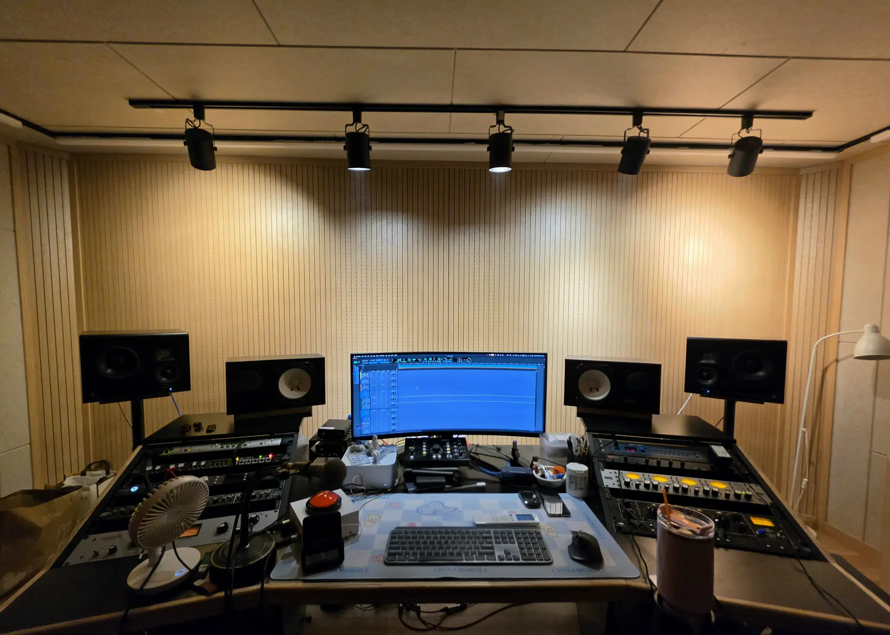
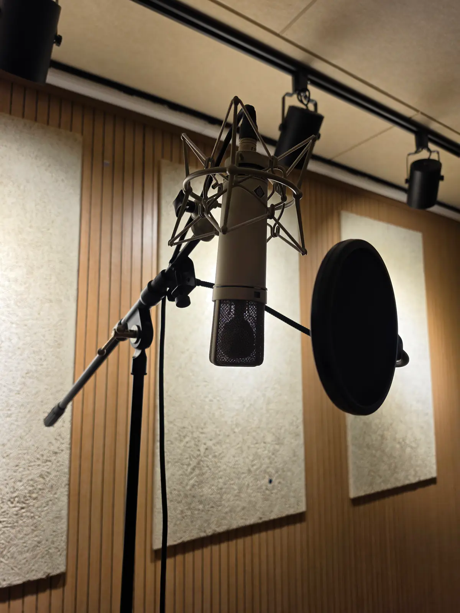
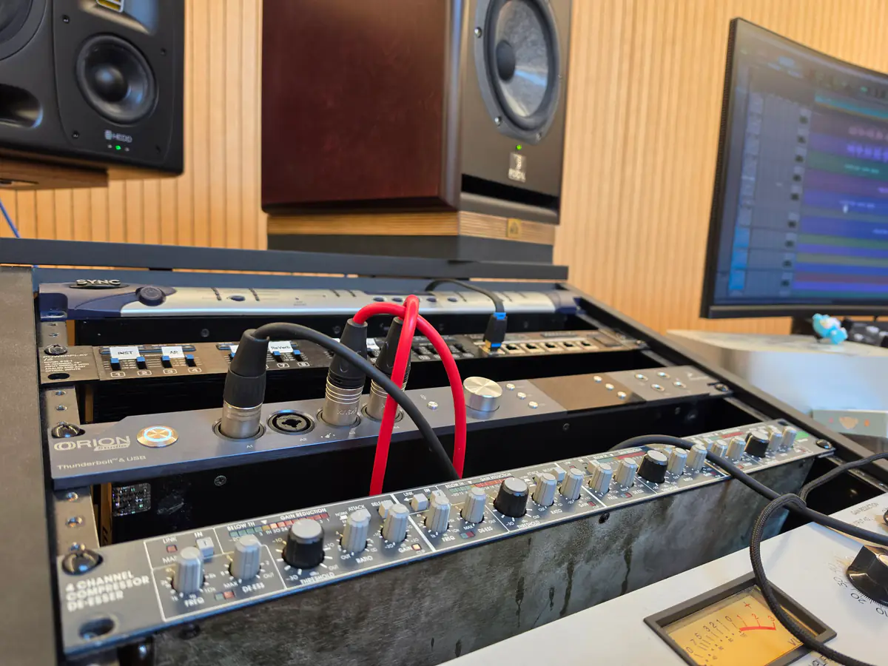
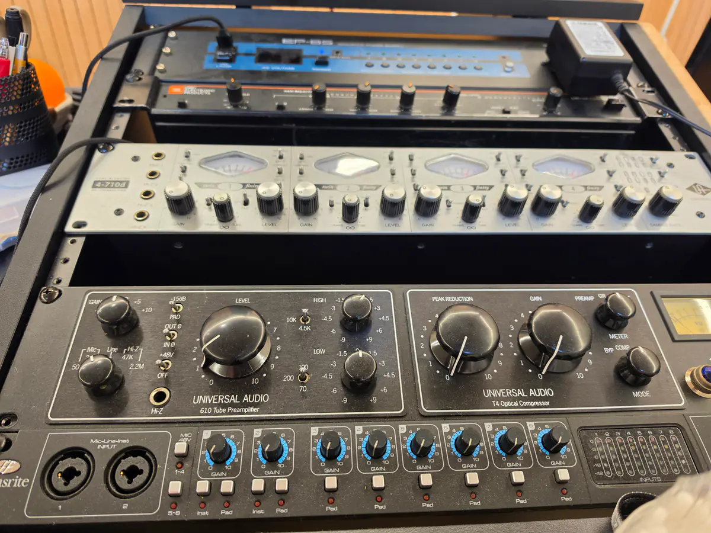

커버곡 믹싱
에디팅·튠, 인공화음, 2트랙·STEM 믹스, 마스터링까지 곡에 필요한 공정을 선택합니다.
01 GREY MUSIC STUDIO
The standard of entertainment mixing.
전직 엔터 프로듀서, 12년차 음악인
믹싱 · 디렉팅 · 레코딩 · 레슨
02 SERVICES
에디팅·튠, 인공화음, 2트랙·STEM 믹스, 마스터링까지 곡에 필요한 공정을 선택합니다.
보컬의 매력이 가장 잘 드러나는 방향을 찾고, 녹음부터 디렉팅까지 함께 완성합니다.
작사·작곡·편곡부터 녹음, 믹싱, 발매와 MV까지 프로젝트에 필요한 팀을 구성합니다.
방송, 공연, 행사, 오디션 환경에 맞춰 보컬 구간과 큐를 설계한 라이브 음원을 제작합니다.
곡의 분위기와 레퍼런스를 바탕으로 작곡·편곡을 진행하고, 필요한 제작 범위를 함께 정합니다.
목표와 현재 수준에 맞춰 보컬·믹싱 레슨을 진행하며, 필요한 내용과 일정을 함께 정합니다.
원하시는 서비스를 선택하고 신청 양식을 작성해 주세요.
신청양식 페이지 들어가기03 SELECTED WORKS
04 PROCESS
신청하신 공정의 완성본과 크레딧 안내를 함께 전달합니다.
용도, 일정, 원하는 방향과 필요한 공정을 확인합니다.
신청 양식과 녹음본을 확인한 뒤 일정을 확정합니다.
상담한 방향에 맞춰 에디팅, 믹싱 등 공정을 진행합니다.
1차본 전달 후 총 3회까지 구체적인 피드백을 반영합니다.
48kHz / 24bit / Mono WAV 형식과 크레딧을 전달합니다.
05 THE TEAM
GreyMusicStudio · KIYOLiVE 내부 제작진이 프로젝트의 구성과 필요한 전문 분야에 따라 참여합니다.
06 THE STUDIO
Grey Music Studio의 작업 공간과 실제 제작에 사용하는 장비, 플러그인을 소개합니다.




RECORDING · MONITORING · OUTBOARD
MIXING · MASTERING · EDITING
07 FILE GUIDE
08 BEFORE ORDER
프로젝트 파일, EQ 세팅, 플러그인 캡처 등 작업 노하우에 해당하는 자료와 화음 파트의 분리 제공은 어렵습니다. 화음 확인이 필요할 경우 구간 캡처 또는 볼륨을 높인 확인용 파일로 안내할 수 있습니다.
선 문의 후 결제해 주세요. 작업물은 포트폴리오로 활용될 수 있으며 최종 안내되는 크레딧을 반드시 기재해 주세요. 녹음본 상태에 따라 추가금이 발생하거나 작업이 어려울 수 있습니다.
09 AVAILABILITY
일정을 확인하신 뒤, 정확한 마감 가능 여부는 문의를 통해 확인해 주세요.
10 START A PROJECT